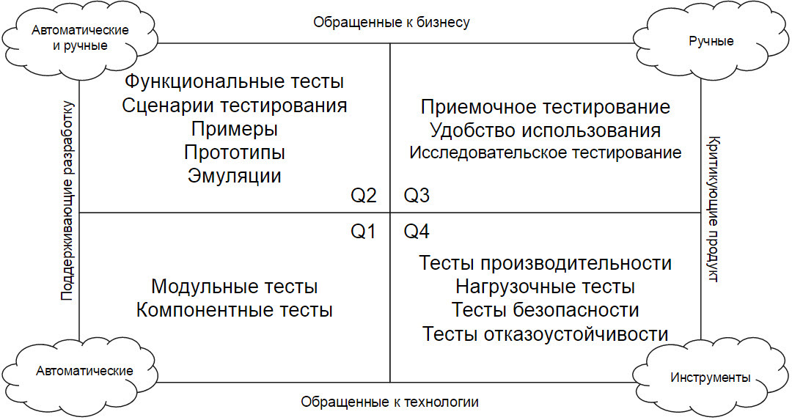

Сценарий: Определение причин слабой распространенности Gherkin
Допустим я решил разобраться, почему Gherkin используется небольшим количеством команд
Когда начал анализ причин
Тогда понял, что неверно выбрана целевая аудитория
Не так давно среди моих знакомых возник вопрос: “Зачем Gherkin?”. Причем вопрос был поставлен не как вброс на лопате, а чтобы понять его применимость. Старт обсуждению дал kuntashov в G+ заметкой со следующим содержанием (сюда я привожу сухой остаток, совсем немного подкорректированный мной):
Gherkin был создан, чтобы сценарии использования можно было редактировать как нарратив (повествование), т.е. “почти на человеческом языке” в простой, лаконичной форме и доступном формате. Т.е. назначение формата было — быть в первую очередь лицом к не-технарям, но при этом сохранить более-менее достаточную формальность, чтобы можно было автоматически обрабатывать.
При этом бизнес-аналитики или любые другие конечные пользователи не очень хотят читать и тем более редактировать сценарии на Gherkin. Таким образом создание feature файлов перекладывается на плечи разработчика, для которого Gherkin — дополнительный и, возможно, лишний слой абстракции. Как мы знаем, “абстракции текут” и дополнительный слой только увеличивает вероятность “протечки”.
Может все же использовать языки, которые больше повернуты лицом к программистам?
Если есть желание совместно разобраться в полезности Gherkin и для кого он предназначен, добро пожаловать под кат. Подчеркну, что Gherkin = BDD, но BDD ≠ Gherkin. Действительно, если посмотреть на инструментарий поддерживающий BDD концепцию, сразу становится видно, что есть 2 выделенных лагеря:
Gherkin, если кто не знает, это язык описания желаемого поведения системы. В виду своей близости к естественному языку, прослеживается попытка убить сразу двух зайцев — автоматизировать тестирование и создать “живую” проектную документацию. Те, кто хочет узнать подробнее — жмукаем сюда (eng) или сюда (rus).
Gherkin и представители бизнеса / аналитики
Изначально Gherkin позиционировался как инструмент для аналитиков и представителей бизнеса. Немного поясню, что под представителями бизнеса я понимаю бизнес-экспертов, владельцев продуктов, аналитиков, экспертов предметной области и т.п. Почему же он не едет? Не смотря на максимальную приближенность Gherkin к человеческому языку, это все же язык программирования. Т.е. мы просим бизнес немного попрограммировать… Как большинство людей поступает, когда их просят делать что-то, в чем они не особо разбираются и, по большому счету, не должны разбираться? Прокрастинируют или бунтуют.
Gherkin и разработчики
Итак, определились. Представители бизнеса описывать формальные сценарии, как правило, не могут и не хотят. Хорошо, перекинем это на плечи разработчиков. Почему и тут не едет? Дело в том, что у подавляющего большинства разработчиков мозг устроен так, что у них когнитивное сопротивление против написания тестов до кода. Я помню свои ощущения, когда начал пробовать TDD. Абсолютно ломается привычный способ мышления, было такое ощущение, что у меня меняются местами левая и правая половинки мозга… КАК? КАК я могу тестировать то, что еще не написано!?!?!? Только после перестроения мышления такой подход начинает ощущаться как естественный и начинает приносить пользу. Более того, далеко не все разработчики умеют проектировать сценарии тестирования. Проектирование сценария тестирования — это особый процесс, который так же не является естественным для разработчиков. Разработчики — творцы, которым не до вопросов валидации и верификации. Стоит так же обратить внимание на абсолютно логичное замечание, что Gherkin — это дополнительный слой абстракции для разработчиков. Зачем мне что-то писать на Gherkin, если я могу сразу на прикладном языке все сделать? Конечно, Gherkin для разработчиков выглядит как совершенно лишнее звено.
Gherkin и someone else?
Хорошо, представители бизнеса не могут / не хотят, разработчики не могут / не хотят. Так для кого был придуман этот инструмент? Кому он может быть полезен? Может проблема кроется в неправильном позиционировании и неправильном выборе целевой аудитории? А что если предположить, что целевая аудитория Gherkin — это тестировщики? Причем не просто тестировщики, а гибкие тестировщики (agile testers). Навык создания сценариев тестирования у них в крови. Склад ума позволяет вычленять самые важные и нужные сценарии для тестирования и легко их описывать. Еще, это люди, которым впоследствии предстоит тестировать будущую систему. А значит, они заинтересованы в том, чтобы система, которая к ним попадет — имела четко заданные спецификации и сценарии поведения. Да, это переворачивает привычную логику. Да, тестер начинает свою работу до того, как что-то будет разработано. Но ведь по сути TDD и BDD это как раз об этом… И не будет проблем с тем, что:
На конец итерации будет оставаться самая интересная и сложная часть — исследовательское тестирование, на которое редко когда хватает времени при обычной разработке. Тут возникает вопрос: “Бизнес-аналитика меняем на гибкого тестировщика вооруженного Gherkin что ли?”. Нет, не меняем. Мы дополняем команду формулирования требований тестировщиком. Для пояснения хочу сослаться на матрицу тестирования:  На мой взгляд, Gherkin, явный представитель бизнес-ориентированных тестов, которые поддерживают разработку. Иными словами — это второй квадрант (Q2). Тесты этого квадранта в первую очередь направлены на сбор требований. Как бы мог выглядеть процесс сбора требований, когда у нас есть тестировщик с Gherkin? В современной разработке новые фичи начинают свою жизнь в виде пользовательских историй, написанных командой бизнеса. Написание историй не подразумевает проработку деталей. Истории предназначены только для того, чтобы служить отправной точкой диалога между командами бизнеса и разработки. Здесь важную роль играют тестировщики, которые помогают выбрать примеры и контекст для каждой пользовательской истории. Именно в этот момент рождаются сценарии Gherkin и появляется общее информационное пространство для всех участников процесса. Понимая проблематику бизнеса, технические специалисты смогут предложить более практичные в реализации альтернативы. Полученные в результате обсуждения сценарии использования (use-cases) одобряются бизнесом. В дальнейшем эти сценарии являются руководством для разработчиков в процессе написания кода и помогают узнать, когда код начинает удовлетворять требованиям бизнеса.
Подведем итог
Для команды бизнеса Gherkin может быть полезен только если в команде есть специалист, разбирающийся в технологиях и с задатками программиста. Разработчикам Gherkin скорее не помогает, а заставляет выполнять какие-то дополнительные, возможно, ненужные действия. Для разработчика автоматизацию тестирования проще выполнять в первом квадранте (Q1) матрицы тестирования, на уровне модульных тестов, просто выглядеть они могут в стиле BDD (codeception, mocha.js и т.п.). Тестировщики, на мой взгляд, оптимальная целевая аудитория для Gherkin. Программируют далеко не все тестировщики, но они смогут довольно легко овладеть Gherkin’ом. На раннем этапе выполняется часть работы по тестированию и остается время для других видов тестирования, например, исследовательского. Так же хочу отметить, что, на мой взгляд, тесты из квадрантов 1 и 2 (Q1 и Q2) ни в коем случае не должны противопоставляться, они прекрасное дополнение друг к другу! Тесты первого квадранта дают такой замечательный артефакт, как качественный дизайн программного кода. Тесты второго квадранта дают уверенность в том, что бизнес получит то, что он ожидает, а не то, что получилось.